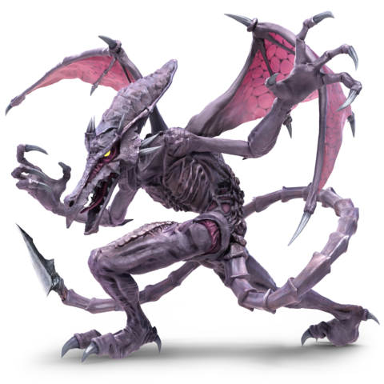

Seleccione Un personaje para entrar en la página de Super Smash Bros Ultimate. Estos son los personajes nuevos que entraron esta vez, seleccionador por el propio Masahiro Sakurai; desarrollador del juego.
|
|
|
#64 Inkling: De la más reciente franquicia de Nintendo. Inkling está dispoinible con 8 colores diferentes, 4 para para el másculino y 4 para el femenino. Sus ataques están basados en las armas que usa en su distintivo juego |
|  |
#65 Ridley: Fue demandado para Super Smash Bros para 3DS/ Wii U; pero según su "Tamaño" era imposible incluirlo. Ahora, su tamaño no es un problema para ser un peligro para su mayor rival; Samus. Sus ataques son lentos pero demuestran un gran daño si consiguen golpear |
|
#66 Simon Belmont: Castlevania era un clásico de la Ness y su protagonista era muy recordado. Anunciado en agosto, el se compone de las armas vistas en su juego y algunos movimientos basados en los ataques de otro personaje conocido de su franquicia. |
|
#67 King K. Rool: Desde Nintendo 64 consiguió ser un dolor de muelas para los jugadores de Donkey Kong Country. Sus patrones han sido modificados para que el jugador sea el que decida con que potencia conseguirá hacer daño a los rivales en combate;a pesar de su complexion. |
|
#68 Canela: ¿Querías relajarte? Juego equivocado. Canela es la parte más tierna de Animal Crossing, tras su anuncio muchos se enfadaron por que podría haber sido un personaje diferente. Ahora todos lucharan por proteger a esta pequeña monada. |
|
#69 Incineroar: El sol y la luna se alinearon, Incineroar llegó directamente de la 7ª generación de Pokémon. Todos sus movimientos están basados en la lucha libre y movimientos dentro del juego. Quien lucha contra el fuego, se quema. |
 |
#70 Planta Piraña: ¿Una planta?¿En serio? No estás soñando, de verdad incluyeron a un personaje así. Este personaje será gratuito por tiempo limitado y no estará disponible hasta un par de meses después de la salida del juego. |
|
#71 Joker: Llamado para robar el mayor tesoro... una victoria en Smash Bros. Antes de su adición al juego el no había aparecido en ninguna consola de Nintendo, sorprendiendo a la mayoría como un personaje sorpresa. |
|
#72 Héroe: 4 héroes se unen para luchar por lo justo, a pesar de que salieron con un daño descontrolado. Directamente llegados desde Dragon Quest por parte en respuesta a los que pedían el personaje más conocido de Akira Toriyama. |
|
#73 Banjo y Kazooie: Rare no les dió una oportunidad, pero Nintendo si lo hizo. Se especuló su llegada desde la inclusión de King K. Rool y estuvieron en lo cierto; repitiendo la misma broma que con la presentación del cocodrilo. |
|
#74 Terry: Puro múculo, rúbio y con unos músclos que envidiarían a cualquier culturista. Terry es la inclusión de un personaje de la empresa SNK; quienes se creía tenían una fuerte rivalidad con Nintendo. |
|
#75 Byleth: La decepción golpeo de nuevo, la gente pesaba que sería un personaje pero fue de Fire Emblem. Muchos se enfadaron esperand que el siguiente fuera algo mejor y así fue; aún así fueron bien recibidos a la hora de mecánicas de juego. |
|
#76 Min Min: La guerrera del Ramen de ARMS llegó tras un anuncio rápido en un Direct. Min Min fue la necesaria para calmar la ola de enfadados por el anterior personaje con una acogida mixta de los jugadores. |